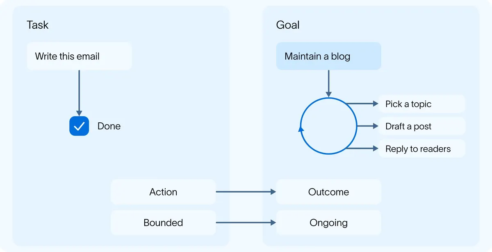
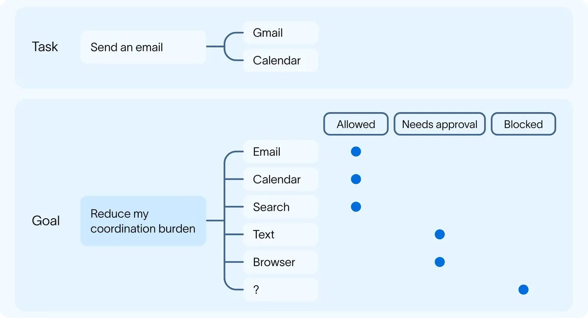

任務到目標：交出的是決策權，不只是提示
導讀原文：From tasks to goals（LangChain 官方部落格「In the Loop」專欄，Harrison Chase 的觀點文章；談代理從接任務改成接目標後，產品與提示要補哪六件事）
給目標不是把提示寫長，而是把「做什麼、何時做」的判斷交出去；代價是六項配套得先補齊，否則交出的是失控。
這是 Harrison Chase 的專欄觀點文，不是產品公告：沒有數據、沒有客戶案例。
文中六項配套是他對代理實作的歸納，屬可受挑戰的主張，以下逐項標示。
兩個轉向：交出結果，而不是交出動作
原文把這一步拆成兩個更實際的位移：從指定動作改成指定結果，從有限指派改成持續責任。
差別一句話看得出來：任務是「寫這封信」，目標是「維持一個部落格」。
目標交出去，拆解權也交出去了：代理把目標拆成任務、做掉幾項、更新清單，再決定下一步。

這對上下文工程是新工作。原文要求代理擅長發想與挑選任務，而且要想得不一樣——重複提同一批任務，原文的說法是「那就不太好了」。
也要看得到：原文要求有任務清單一類的介面，讓你知道代理正在做什麼。
原文的說法是「迭代」：拆解、執行、更新清單再重來，不是一次規劃到底。
原文收尾把角色講明白：你的工作從「指定每個任務」變成「設定方向、定義邊界、檢視進度」。
所以給目標真正交出去的是兩個判斷，不是一段文字。
（編輯觀點：清單移轉後若人還逐項指定任務，等於兩套流程並行，協調成本反而更高。）
工具面：從猜得到的兩支，變成未知的一疊
給任務時，你大致猜得到它會呼叫哪些工具：寄一封信就是 Gmail，也許再加行事曆。
給目標時猜不到。原文的例子是「降低我的協調負擔，同時盯住重要承諾」——可能用到 email、簡訊、搜尋、瀏覽器。
原文甚至說，你可能不知道它需要哪些工具，清單是執行中才長出來的。
原因很直接：目標模式把「要不要用這個工具」的判斷也一起交出去了。

那三段權限在任務模式幾乎用不到，因為工具面小、人也在旁邊看（本站推論）。
目標模式卻得有審核流程兜著，否則代理自己長出來的那一疊工具沒人管。
原文的配套因此很直白：需要更強的工具控管，決定代理能呼叫什麼、不能呼叫什麼。
工具治理在這裡不是精細度問題，而是有沒有「擋得住」那一層。
背景執行要補的四件事
任務模式裡你自然在場，資訊沒給齊，代理在對話裡追問一句就好。
目標模式換成背景執行，這個預設消失：它多半在你離開之後才卡住。
原文的要求是給它一個問人的通道，Slack 或專屬介面都行。以下四項由本站整理成表。
| 面向 | 目標模式的變化 | 原文要求的配套 |
|---|---|---|
| 人在不在圈內 | 代理在背景跑，卡住時身邊沒人可問 | 提問通道：Slack 或專屬介面 |
| 進度判準 | 要自己判斷有沒有靠近目標 | 指標＋人類回饋，並讓人能糾正它對「成功」的解釋 |
| 觸發與停止 | 不是跑到底，是被叫醒、做完再睡 | cron 與事件觸發，加上「該不該動」的提示，並能暫停或忽略 |
| 跨次記憶 | 上下文不再由使用者每次補 | 保留決策與回饋並跨次沿用；否掉的題目要影響下次選題 |
→ 可橫向滑動
觸發同理：目標模式不是常駐，而是被 cron 或事件叫醒，醒來後還要判斷這回該不該動手。
進度判準的取捨原文自己也講了：指標能自動追蹤，代價是可以被鑽。
原文的壞例子很具體：每三十分鐘一個心跳、每次都問你同一個問題，體驗會爛掉。
它補了一句常被忽略的：持續責任不代表永遠找得到事做，「什麼都不做」有時才是正確動作。
記憶是同一條線。原文認為任務世界其實不太需要記憶——除非同一個任務反覆做。
四件事其實是同一個問題：沒人守在旁邊時，代理怎麼取得它缺的資訊、又怎麼知道該停。
（編輯觀點：原文說「越貼近指標越好」，同段又補「別盲目最佳化指標」；這句該讀成提醒，不是設計原則。）
帶走三件事
先確認任務清單歸誰。清單還捏在人手裡，就不算真的給目標。
工具權限要先有「擋」。目標模式的呼叫面未知，只能靠邊界收斂。
沒人看著才叫目標模式。提問通道與停止規則沒做，等於沒交出去。
導讀為本站編輯內容（AI 摘解自原文與館藏重點，非官方文件）；引述數據出自原文，前兩張圖為原文圖（LangChain），第三節表格為本站整理、原文未給此表格。內容經對照原文的獨立事實審查後發布。